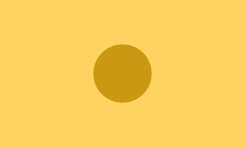
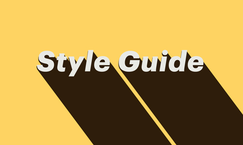

Graphic Design · Illustration
Web Icon Illustration
Brand-aware icon sets for interactive web landing pages, coordinated with social media graphics so the whole campaign speaks in one visual voice and drives member engagement.
- Tools: Illustrator CC, Photoshop CC

Visual Design · Illustration · Animation
Digital Ads and GIFs
Designed static and animated assets for multi‑channel campaigns, adapting visuals across social, email, and web while maintaining a cohesive brand voice.
- Tools: Photoshop, Illustrator, After Effects

Graphic Design · Illustration · Brand
DRØM Marketing and Print
Designed and produced a suite of print and digital brand assets for DRØM, preparing CMYK‑ready files and consistent visuals for campaigns and packaging.
- Tools: Illustrator, Photoshop, Product Photography


Brand · Visual Design
Ashoka Style Guide
Unified Ashoka’s global brand by leading a cross‑continent effort to create a flexible, consensus‑driven visual system adopted by 90+ offices.
- Tools: InDesign, Illustrator